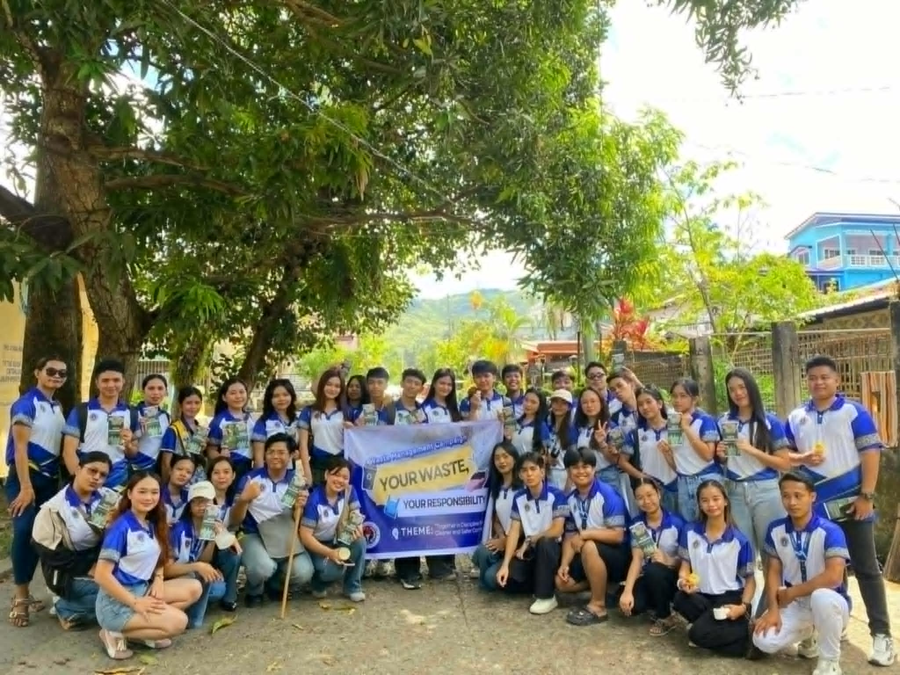
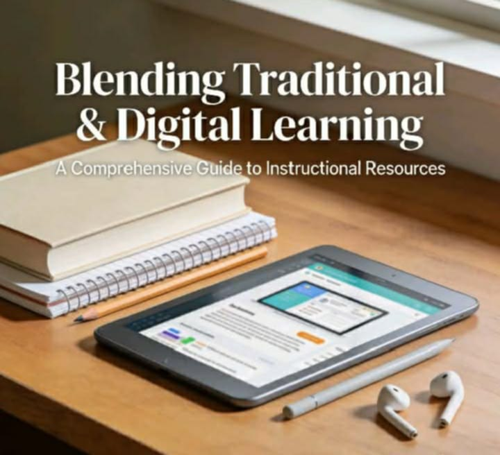
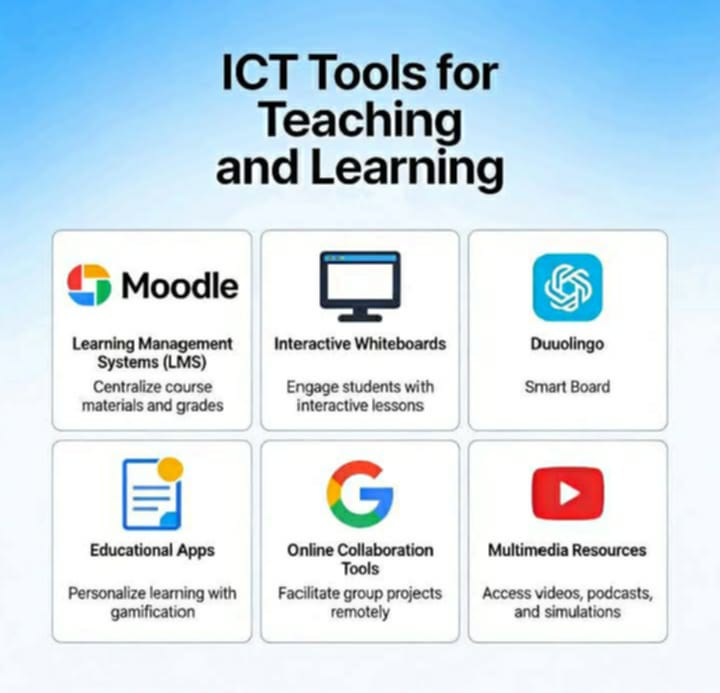
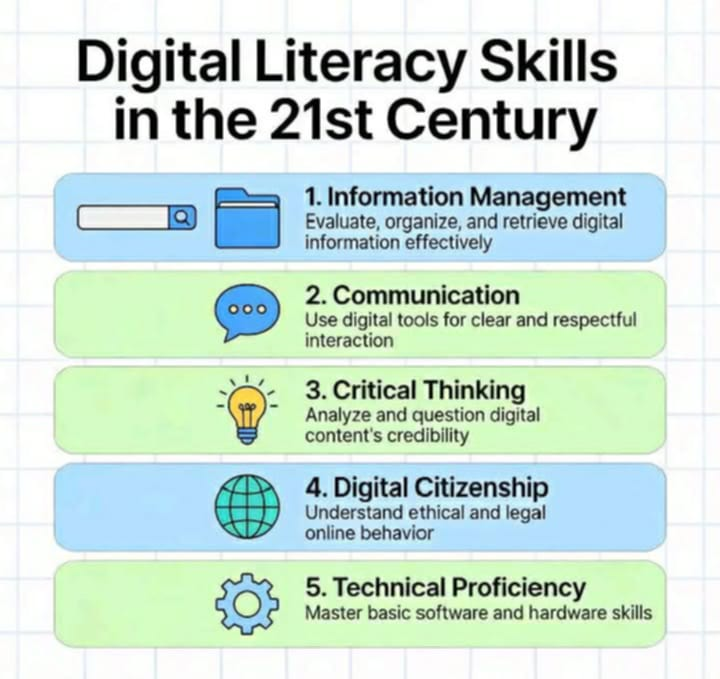

Communication Skills
I am able to express my ideas clearly and effectively in both verbal and written forms, making communication a core strength.
Hi! I am Riza Mae Rueda, a second-year college student taking up Bachelor of Secondary Education major in Social Studies at Samar State University. This e-portfolio showcases my learning, experiences, and reflections in the subject Technology for Teaching and Learning, where I explore how technology enhances teaching and learning in the modern classroom.
I am from Brgy. Bunu-anan, Catbalogan City. I am passionate about discovering new experiences that help me learn and grow as a person. I aspire to become a teacher someday because I enjoy learning new things and sharing knowledge with others, especially when it helps people grow.
I am a friendly and funny person who enjoys making people laugh and creating a positive environment for those around me. I love night hangouts with friends, listening to music, watching movies, and spending time with the people who matter most to me.
BSEd — Social Studies
Samar State University
2nd Year College Student
Brgy. Bunu-anan, Catbalogan City
Future Educator
Music · Movies · Night Hangouts
I am able to express my ideas clearly and effectively in both verbal and written forms, making communication a core strength.
I work well with classmates and contribute actively in group tasks, fostering cooperation and shared success.
I can use digital tools and applications that are helpful for learning and completing ICT-related tasks effectively.
I can adjust to new situations, tasks, and challenges that come my way in school and beyond with ease and resilience.
I analyze situations carefully and think of possible solutions when I encounter difficulties in tasks or activities.
As part of our Social Studies organization activities, I participated in different meaningful experiences that helped me develop my skills and understanding, especially in teaching and social responsibility.

We went to a local community to promote awareness about environmental responsibility. Through this activity, I learned the importance of taking action in protecting the environment. We also used technology in documenting our activity — taking photos and organizing reports — which helped us present our output clearly and effectively.

A Social Studies Seminar focused on Lesson Planning where we were trained on how to create effective lesson plans for teaching. I gained new knowledge on how to structure lessons properly and make them more engaging for learners. Technology was also used during the seminar through presentations and digital materials, making the discussion more organized and easier to understand.

We conducted a Demo Teaching Project where we applied what we learned by simulating a real teaching environment. This activity helped me improve my confidence and teaching skills. We also integrated technology through the use of presentation slides and digital tools, making our lesson more interactive and engaging for the audience.
Reflections on integrating traditional and digital teaching and learning — the insights, realizations, and lessons I carry forward as a future educator.

Learning about non-digital or conventional instructional materials made me realize how important these tools are in teaching. At first, I thought that effective teaching always requires technology, but I learned that simple materials can also make a big impact on students' understanding.
Through this topic, I understood that materials like chalkboards, flashcards, charts, and handmade visuals can help present lessons in a clearer and more concrete way, especially in Social Studies. These materials allow students to better visualize concepts like history and geography.
I also realized that conventional instructional materials are practical and accessible, especially in situations where technology is limited. This made me appreciate their value even more.

As I learned about selecting and using ICT tools, I realized that technology plays an important role in modern education. However, I also understood that using technology is not just about knowing different tools, but about using them with purpose.
In this topic, I became more aware of how tools like Google Classroom, Canva, and Google Docs can support teaching and learning, making lessons more interactive, organized, and engaging for students.
At the same time, I learned that not all ICT tools are effective in every situation. It is important to choose the right tool based on the lesson objectives and the needs of the students.
Creating my e-portfolio became an important part of my learning journey. Through this process, I realized that an e-portfolio is not just a collection of outputs, but a reflection of my growth and development as a student.
As I worked on my e-portfolio, I had the chance to review my outputs and think about what I have learned from each task. It helped me see my progress and understand my strengths and areas that I still need to improve.
I also learned that e-portfolios can be used as an effective assessment tool. It allows students to show not only their work but also their learning process. This experience made me realize the importance of reflection in education.
In learning about collaborative tools, I realized how technology can support teamwork and communication. Tools like Google Docs and online platforms make it easier to work with others, even if we are not physically together.
This topic helped me understand that collaboration becomes more effective when supported by the right tools. It allows sharing of ideas, real-time editing, and better communication among group members.
However, I also learned that successful collaboration does not depend on technology alone. It also requires cooperation, responsibility, and respect among group members.

My learning about digital literacy made me realize how important it is in today's world. Digital literacy is not only about using technology but also about using it responsibly and effectively.
Through this topic, I learned the importance of evaluating information, identifying reliable sources, and being responsible in online communication. These skills are necessary because of the large amount of information available online.
I also understood that digital literacy includes being aware of ethical issues such as respecting intellectual property and protecting personal information. This learning strengthened my understanding that digital literacy is an essential skill that students need in the 21st century.
Feel free to reach out — let's stay connected beyond this portfolio.
Location
Brgy. Bunu-anan, Catbalogan City
School
Samar State University